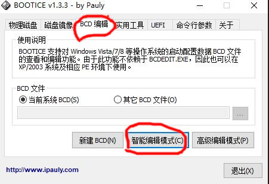
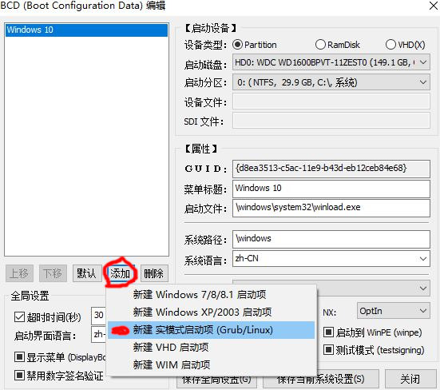
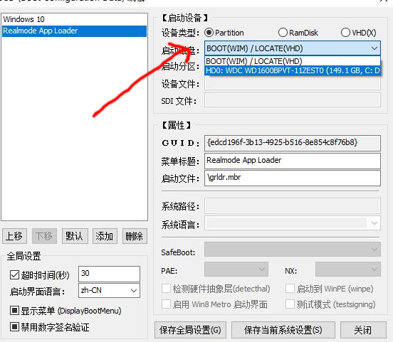
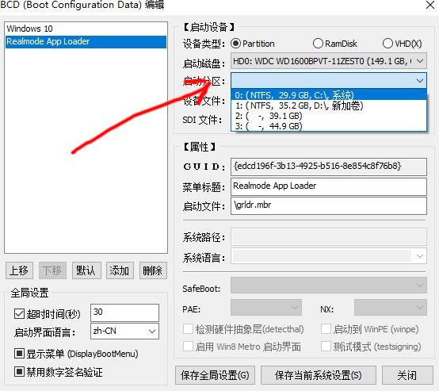
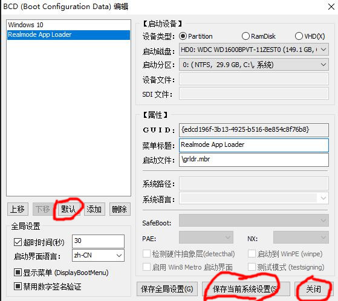
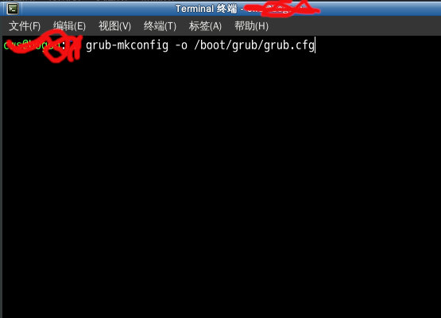

不用光盘不用U盘也能安装系统
以前安装系统一般是把iso文件刻录到光盘,再从光驱启动进行安装.或刻录到U盘启动安装.可是当你没有光驱也没有U盘怎么办呢?下面分3种情况来说说
#给标签h2添加下划线
(1)你的系统是2000/XP/2003
下载
grub把里面的文件解压到C盘根目录
编辑C:\boot.ini,把timeout的值改为大于0的数,在末尾添加一行代码
C:\grldr.mbr="GRUB MENU"
下载
openbsd,放在C盘根目录里重启电脑
多了一项启动菜单,点进去就出现了openbsd--net-install。选择它,开始安装有可能是世界上最安全的操作系统
(2)你的系统是win7/8/10
下载
grub
把里面的文件解压到C盘根目录，启动BOOTICE_x86_16.06.17_1.3.4.exe

添加实模式启动项

选择C盘所在的硬盘

选择C盘

依次点击"默认","保存当前系统设置","关闭"

下载
openbsd,放在C盘根目录里重启电脑.启动菜单多了一项Realmode App Loader
点击进去就出现了“openbsd--net-install”选择它,安装有可能是世界上最安全的操作系统
(3)你的系统是Gnu/linux(debian/Ubuntu/Fedora)
编辑/etc/grub.d/40_custom,添加以下代码
menuentry "openbsd--net-install"
{
linux16 /home/memdisk iso raw
initrd16 /home/cd66.iso
}
下载
openbsd和
memdisk,把它们放在/home/，运行以下命令
grub-mkconfig -o /boot/grub/grub.cfg

重启电脑.启动菜单多了一项openbsd--net-install,选择它,安装有可能是世界上最安全的操作系统
创建时间 : 2016-xx-xx
修改时间 :
说明 : No
参考网址 : 很多,已忘记